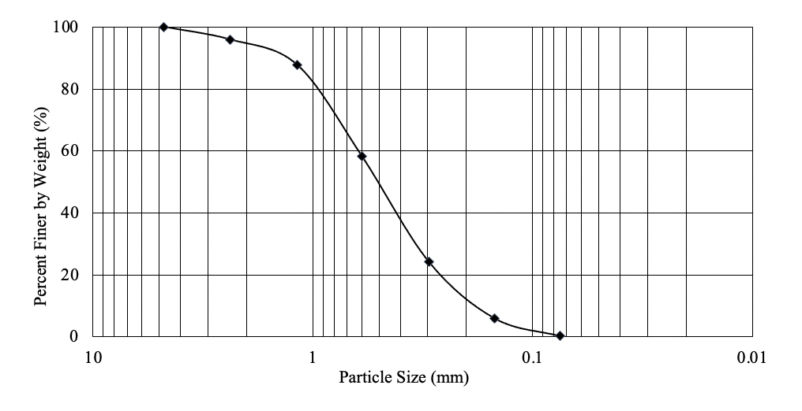

Sieve Analysis

From the graph:
1. The given soil is ___________________ grained.
2.
i. % sand =
ii. % silt =
iii. % clay size =
3.
i. D10 =
ii. D30 =
4.
i. Coefficient of uniformity = CU = D60 / D10 = ____________________
ii.Coefficient of curvature = CC = (D30)2/D10*D60 =______________